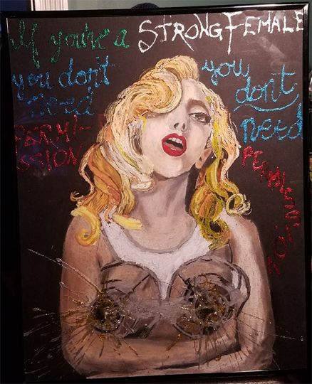
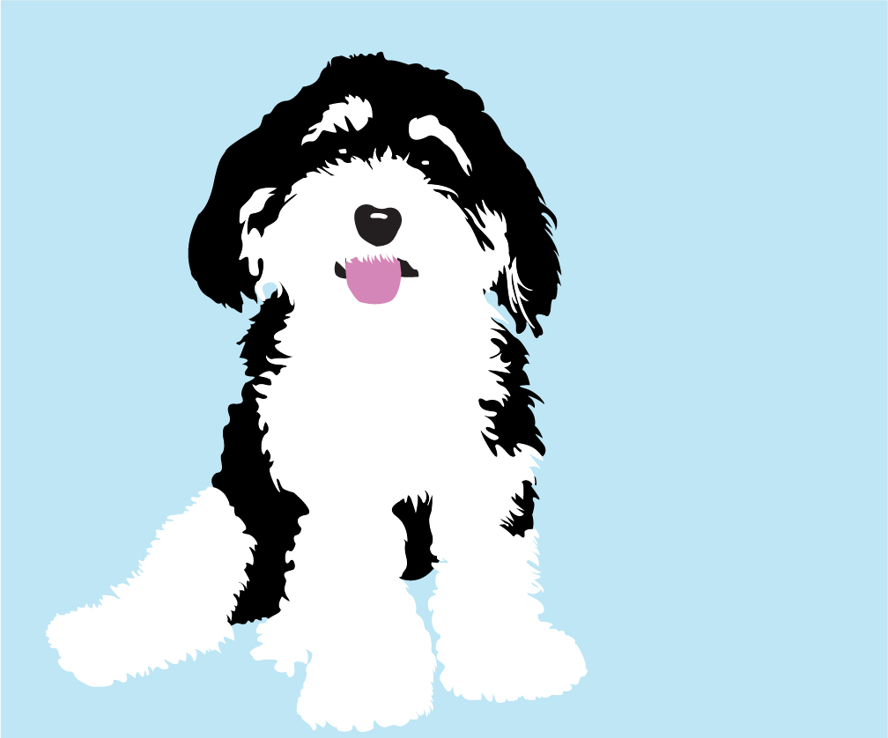

search results for "portrait"

Self Portrait in Violet
This was done as a study of light and depth. To take the reference photo of me, we set up some dramatic lighting...

If You're A Strong Female, You Don't Need Permission
Media: Pastel, Makeup, and glitter gule.
I made this portrait immediately following my Rosie the Riveter recreation, using what I’d learned and transforming it all into something new. The portrait. . .

Phineas
My little dog Phineas is my muse. I made this little logo of him to capture his essence, and although it's simple, it's one of my favorite things I've ever produced...